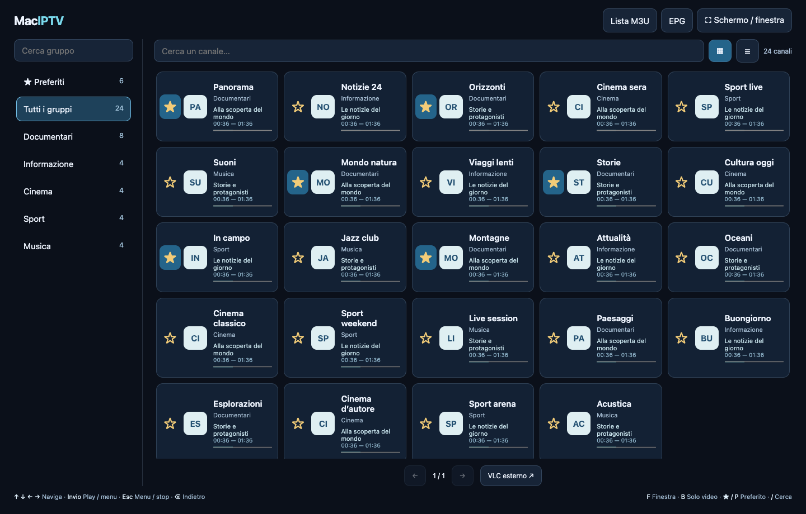
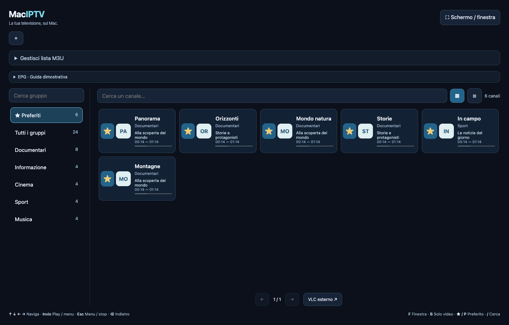
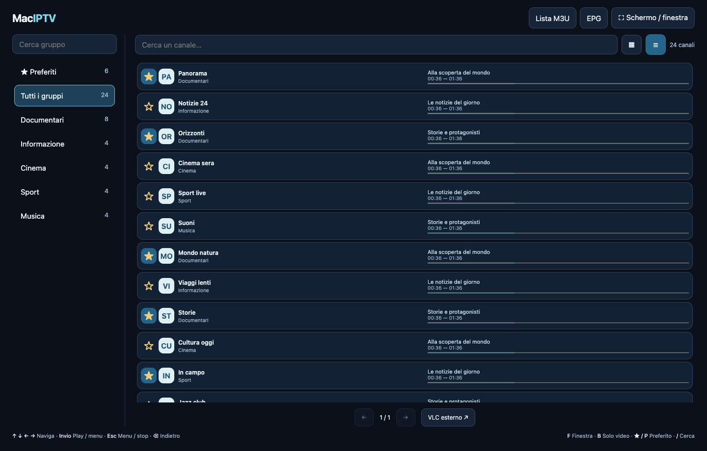
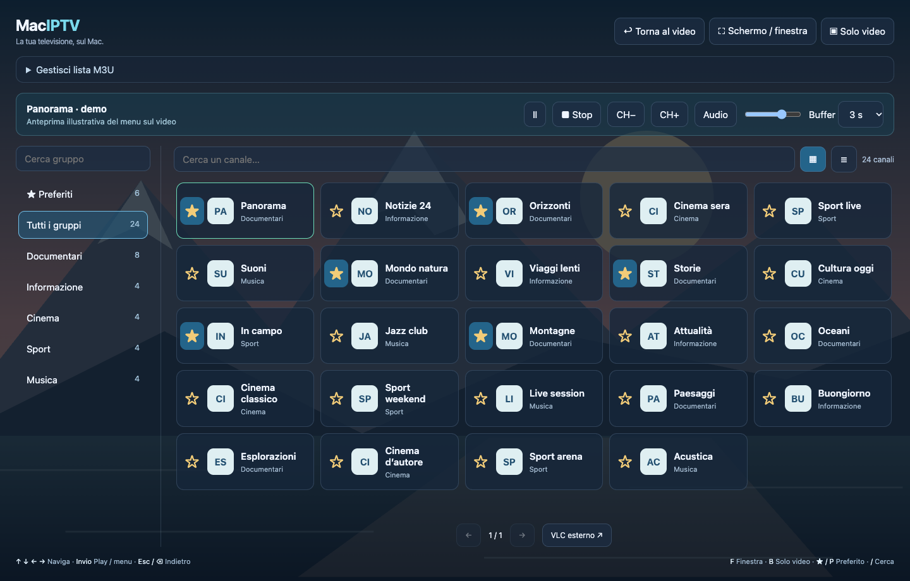

Le tue liste, senza passaggi extra.
File M3U o indirizzo HTTP/HTTPS. Aggiorna le liste remote ed esporta quella salvata. Se l’importazione fallisce, il catalogo precedente resta disponibile.
File e URLAggiornamentoExport
Carica la tua lista. Ritrova i tuoi canali.
Guarda a schermo intero o tieni il video accanto a quello che fai.
Intel + Apple Silicon · macOS 13+ · VLC già incluso
Prima installazione: firma locale, app non notarizzata →
Novità 1.1.1: stato EPG visibile, errori di download/XMLTV, conteggi dei canali associati e programmi disponibili, esempi degli ID e pulsante Riprova EPG.
Premi I per nome, logo, risoluzione e programmi attuale/successivo: il riquadro sfuma dopo 5 secondi. Le guide XMLTV vengono rilevate dalla lista, caricate in background e conservate localmente. Nel catalogo, programma attuale e progressbar; dettagli solo nelle informazioni.
Il pulsante + aggiunge altre playlist, ognuna con preferiti e navigazione indipendenti. Posizione e dimensioni delle finestre vengono ricordate. B attiva il borderless soltanto durante il video; Esc torna alla modalità precedente. Clic tenuto per trascinare, doppio clic per fullscreen e ritorno. Durante il video il ridimensionamento mantiene il rapporto corretto.
Importa una lista da file o URL. Cerca tra i gruppi, filtra i canali e scegli la vista che preferisci.
File M3U o indirizzo HTTP/HTTPS. Aggiorna le liste remote ed esporta quella salvata. Se l’importazione fallisce, il catalogo precedente resta disponibile.
I preferiti hanno il proprio gruppo e restano salvati ai prossimi avvii. La stella è separata dal comando Play: puoi organizzare la lista senza cambiare canale.

La griglia mette in evidenza i canali. L’elenco affianca i link, selezionabili e copiabili. Ricerca e pagine da 60 elementi rendono consultabili anche cataloghi estesi.

Muoviti tra gruppi e canali, avvia il player e torna indietro usando i tasti. CH+/CH− seguono il filtro corrente, anche oltre la pagina visualizzata.
Premi Invio durante la riproduzione. Ritrovi lo stesso catalogo, con filtri e selezione, in semitrasparenza sopra il video.

Al primo avvio l’app parte fullscreen; poi ricorda la sessione. Un tasto la riporta in finestra, e un altro tocco riempie di nuovo lo schermo.
Elimina i bordi e attiva la finestra flottante, anche mentre lavori in un’altra app. Trascina per spostarla, usa l’angolo inferiore destro per ridimensionarla.
Volume, muto, pausa e buffer da 1 a 10 secondi. Se preferisci, puoi affidare il canale a VLC esterno.
Swift e AppKit gestiscono finestre e comandi. LibVLC riproduce il video. Il catalogo usa una WKWebView locale, senza server da avviare.
Integrazione con macOS, fullscreen e finestre flottanti.
Motore video, audio e codec già nel pacchetto.
HTML, CSS e JavaScript per catalogo e menu sovrapposto.
Binari arm64 e x86_64 nello stesso bundle macOS.
Foundation / URLSession per le liste remote · CryptoKit per gli ID dei canali · JSON e scrittura atomica per i dati locali
Non serve installare VLC, Python, Homebrew o un browser. VLC separato è richiesto solo per l’opzione di riproduzione esterna.
Se macOS blocca il primo avvio, verifica Privacy e sicurezza → Apri comunque dopo aver tentato l’apertura. Non è necessario disattivare Gatekeeper.
La versione 1.0 è stata provata su Apple Silicon. La 1.1 è un’anteprima: i test grafici non sono stati completati nell’ambiente ristretto. Build Intel inclusa e controllata; prova su hardware Intel fisico ancora da effettuare. Registrazione e DRM non sono inclusi. La guida EPG richiede una sorgente XMLTV presente nella playlist o configurata. Le finestre riservate di sistema possono prevalere sul video flottante.
Una sola app per il tuo Mac. Sorgenti aperti, player incluso.
↓ Scarica MacIPTV 1.1.1Note della release, sorgenti e checksum ↗